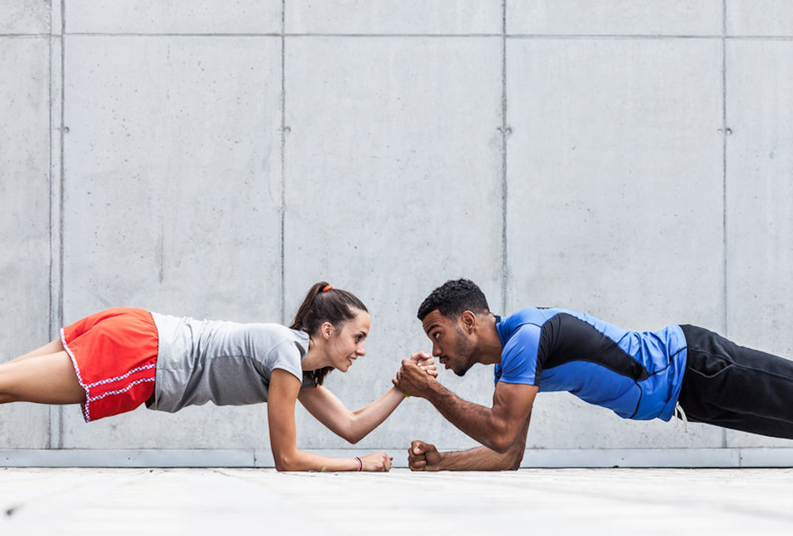

Sometimes, it can be pretty hard finishing a strenuous workout on your own. Especially in the cold and dark time of the year. Training with a partner (both male or female), however, opens up a whole new range of possibilities for motivation. Your training partner can help you hang tough and achieve your goals, regardless of how far away they may seem at first. We would like to share with you five good reasons to exercise with your friends.
有时有没有发觉独自一人完成难度系数相对高的训练总是力不从心。特别是在一年里寒冷的冬天或者低谷的时期。所以找到健身搭档（不管是男是女）就好比找到了坚持运动的新动力。你的搭档督促你坚持，帮助你实现减脂增肌塑形的目标，无论那些目标在初期看起来是多么遥不可及。我们想与你分享五个理由，为什么你需要与找到一个健身搭档，一起锻炼身体。

1. More motivation and no lame excuses 没有借口，更多动力
It is a pleasant Saturday afternoon and you are lazing on the couch. Your favorite TV series is just coming on. Sounds like the perfect excuse to skip today’s training, right? Not if you are training with a partner, it doesn’t! Regular workout times with your friends help you to stick it out and finish your routine.
一个阳光明媚的星期六下午，你懒在沙发上，最喜欢的电视剧要开播啦。听起来找到了一个完美的借口不去健身了，对不？不！如果你有健身搭档这就不是借口了! 与你的朋友定期锻炼时间可以帮助你坚持下去，完成你的日常训练内容。
The chances of you choosing your couch over your training session are much lower in this case. It would be pretty embarrassing, wouldn’t it, if you cancelled on your friends because “you didn’t feel like it”? But don’t just take my word for it: Psychologists at Stony Brook University in New York have found that the exercise habits of friends and family members affect personal motivation.
在这种情况下，您在训练中选择沙发的概率要低得多。这个爽约本身就非常尴尬的，不是吗，如果你失约了你的朋友，因为“你觉得不喜欢它”？不要相信这句话：纽约石溪大学心理学家发现，朋友和家庭成员的运动习惯影响个人动机。
The evidence showed that the motivation of the people closest to us has a positive influence on us and encourages us to do more sports. So what does this mean? It means you should put on some running clothes and a pair of good shoes, meet your friend in the park and leave your weaker self back home on the couch.
证据显示，最亲近的人的鼓励和动机对我们有积极的影响，鼓励我们做更多的运动。那么这是什么意思？这意味着你应该穿上跑步的衣服和好的鞋子，在公园里与你的朋友碰面，远离那个瘦弱的，只知道回家窝沙发的你。
2. It makes training more fun 训练更有趣
Many “training moments” aren’t really funny if you don’t have someone to laugh with. One way of increasing the fun factor is to come up with new ideas on how you can modify your exercises or make your runs together more interesting. For example, instead of just doing a plank challenge, try one with partner hand slaps. Or throw a ball back and forth while doing sit-ups. There are lots of ways you can shake up your training plan – but the craziest and funniest ideas will come to you when you brainstorm together with a friend. These change-ups will make the time fly and – whoosh! – before you know it, an hour will have passed. And the best thing is that you didn’t look at the clock once.
如果没有人欢笑，很多“训练时刻”就不是真正的有趣。增加趣味性的一个方法是提出如何修改练习方案或提出使您的运动更有趣的新想法。例如，不要只是做一个平板支撑挑战，试着尝试与合作伙伴击掌。或者在仰卧起坐的时候来回传递球。有很多方法可以改变培训计划和与朋友一起集思广益时，就可以想出最疯狂和最有趣的训练想法去挑战。这些训练模式的变化让时间变得不那么刻意去消磨，哇！在你还没回过神，一小时过去了。最好的事情是你一次也没看时钟。
3. You push each other 互相鼓励督促
When you feel close to giving up, a training partner can be all the more important because they can help you build up your motivation again. A sporting challenge among friends can help you to push each other and stretch your limits. Consider the following: In England, women were surveyed on their exercise behavior. The study found that 64% of women who train with their best friends were more likely to push their workouts to the limit than those who exercised on their own. Does this mean you are doomed if you can’t find time to work out together? Hardly. You can share your achievements with your friends on different apps and push each other to new personal bests. Who will run the most kilometers in November? Who can do the most burpees in a minute?
当您感到放弃时，健身伙伴可能会变得格外重要，因为他们可以帮助你再次找回动力。朋友之间的挑战可以帮助你鼓励和推动彼此，打破极限。以下几点案例：在英国，女性对运动行为进行了调查。研究发现，女性群体与最好的朋友一起训练的，有64％的女性打破极限的可能比独自训练要高。这是否意味着如果你找不到时间在一起训练，就注定失败？不可能。您可以通过app与朋友分享您的成就，并相互推荐新的个人最佳成绩。 11月份谁会跑最多公里？谁能在一分钟内做最多的burpees？

4. Sport brings people together 把我们聚一起
Did you know that more than 40% of participants drop a fitness course shortly after it begins if they attend on their own? But if they work out with a friend, the dropout rate decreases to 6%. This suggests that one of the best reasons for exercising with friends is the social interaction.
你知道吗，一个人参加健身课程的人在开始后不久就想放弃的概率超过40％以上。如果他们与朋友搭档，概率就会下降到6％。这表明与朋友一起锻炼的最好的理由之一是社交性互动。
People who train together form a group identity and no longer feel alone. When you accomplish something on your own, of course, it’s amazing. Sharing your successes with your friends who know how hard you’ve worked to conquer your inner couch potato feels even better. And if things don’t go as planned? Who cares? A pat on the back from a friend can make things seem half as bad. These simple acts create a kind of connection between people. And it is this kind of experience that bonds people together and makes their friendship that much stronger.
一起组队训练的人，不再感到孤单。当你自己完成某件事时，当然感觉是相当棒的。和你的朋友分享你的成功要比你在沙发干掉整包薯片的感觉更好。如果事与愿违？谁在乎？朋友会拍拍你的背安慰到看起来我们也完成一半了。这简单的行为在人们之间创造了一种感情联系。正是让人们联系在一起的点点滴滴，使友谊更加牢固。

5. Train together, stay together 一起训练一起生活
You should also consider training with your romantic partner. Studies have shown that couples who exercise together regularly are happier in their relationship. Working out together strengthens the relationship and enhances sexual attraction. A morning run, a gym date in the evening or a bike trip on the weekend can heat things up – isn’t that reason enough to work out with your better half? So, are you still vegging on the couch, or are you already out there racing your partner? Let us know if and why you like training with friends.
你还应该考虑与情侣进行训练。研究表明，经常一起锻炼的夫妇更幸福。一起健身训练增强了性吸引力。早晨一起晨跑，傍晚一起健身房训练或周末一起自行车旅行，多么增加彼此感情的事儿！ 这还不够理由与你的另一半锻炼吗？ 那么，你还在沙发上，还是你已经和你的另一半一起开始了？ 让我们知道你喜欢和朋友一起锻炼的原因。
By Edie | June 5，2017